Stellar Dynamics around a Massive Black Hole
Ben Bar-Or and Tal Alexande
Weizmann Institute of Science
The Galactic center is a rich environment
- Extremely dense stellar system
- We can observe individual stars
- Observations indicate a Massive Black Hole \(M=4\times10^{6}M_{\mathrm{sun}}\)
- A “lab” for testing general relativity
- Most of the stellar objects are unobservable
- A “lab” for studying statistical physics of a stellar system

Schödel et al. (2007)
Schödel et al. (2007)
The S-stars cluster

\(N\)-body simulation
Statistical mechanics of stellar systems is challenging
Commonly used Approximations:
- Local interactions
- Instantaneous interactions: Markovian (uncorrelated) process
- Weak encounters: central limit
Description by a Fokker-Planck (diffusion) equation:
- Random walk in velocities (energy and angular momentum)
- Slow Relaxation \(t_{\mathrm{relax}} \sim 10^{10}\,\mathrm{yr}\)
\(2\)-body encounter
\[\frac{\partial}{\partial t}f\left(E,t\right)=\frac{1}{2}\frac{\partial^{2}}{\partial E^{2}}\left[D_{2}\left(E\right)f\left(E,t\right)\right]-\frac{\partial}{\partial x}\left[D_{1}\left(E\right)f\left(E,t\right)\right] \]
Long-time correlations are important
Resonant Relaxation (Rauch & Tremaine 1996):
- Stochastic residual torque
- Short timescales (\(P < t < T_c\)): angular momentum changes coherently
- Longer timescales (\(T_c < t\)): random walk in angular momentum
- Relaxation can be fast: \(T_{RR}\approx\left(P/T_{\mathrm{coh}}\right)T_{\mathrm{relax}}\log\Lambda\)
\(N\)-body simulation
\(N\)-body simulation
The description of resonant relaxation is challenging
Challenges:
- Long range interactions
- Long time correlations
- Multiple timescales: Non-Markovian process
Description by a Fokker-Planck equation?
The Stochastic approach
- Expand the potential due to extended orbital ellipses: \[U\left(a,e,\theta,\phi,\psi,t\right)=\sum_{l=0}^{\infty}\sum_{m=-l}^{l}\sum_{n=-l}^{l}D_{nm}^{l}\left(\psi,\theta,\phi\right)h_{nm}^{l}\left(a,e,t\right)\]
- Define the background torques as an effective noise: \[\eta_{nm}^{l}\left(t\right)\equiv h_{nm}^{l}\left(t\right)-\left\langle h_{nm}^{l}\right\rangle\]
- Stochastic Equations of motion: \[\dot{\boldsymbol{J}}=-\tau_N(J)\hat{e}_\psi(\phi,\theta,\psi)\times\color{yellow}{\boldsymbol{\eta}(t)}\]
- Markovian approximation - uncorrelated noise: \[\left\langle \eta_{i}(t)\eta_j(t^\prime)\right\rangle =\delta_{ij}\delta(t-t^\prime)\]

Resonant Relaxation can be extremely efficient
- Random walk in phase space
- Much faster than \(2\)-body relaxation
- Relax to isotropic angular momentum
- Coherent time = Mass precession
- All stars will plunge into the massive black hole

General relativistic effects restrict the relaxation
- Restricted random walk in phase space
- Protection against direct plunges
- Emission of Gravitational Waves

Post-Newtonian \(N\)-body simulation
Relativistic stars precess fast
- Precession frequency diverge with eccentricity \[\nu_{GR}(j)=\frac{3}{j^{2}}\frac{r_{g}}{a}\nu_{r}\left(a\right)\] where \(j = J/J_{c}=\sqrt{1-e^{2}}\)

S2
Ghez et al. (2008), Gillessen et al. (2009)
\[T_{GR}\approx2\times10^{3}P\]
The diffusion equations depend on the properties of the noise
- Stochastic Equations of motion: \[\dot{\boldsymbol{J}}=-\tau_N(J)\hat{e}_\psi(\phi,\theta,\psi)\times\color{yellow}{\boldsymbol{\eta}(t)}\]
- Correlated noise: \[\left\langle \eta_{i}(t)\eta_j(t^\prime)\right\rangle =\delta_{ij}C(t-t^\prime)\]
- Effective Fokker-Planck: \[ \frac{\partial}{\partial t}f\left(j,t\right)=\frac{1}{2}\frac{\partial}{\partial j}\left\{ jD_{2}(j)\frac{\partial}{\partial j}\frac{1}{j}f\left(j,t\right)\right\} \]
- Noise dependent Diffusion Coefficient: \[ D_2(j) \propto\color{yellow}{{S_\eta}{\color{yellow}(\nu_GR(j))}}\] Proportional to the spectral power of the noise at the precession frequency.
The time evolution depends on the noise properties
- Good match between the stochastic equation of motion (circles) and the effective Fokker-plank (lines)
- Smooth (Gaussian) noise results in adiabatic invariance
- Non-Smooth (Exponential) noise results in weak conservation of adiabatic invariance



Resonant relaxation is efficiently quenched by GR precession
Monte-Carlo simulation

Analytic model
Analytic model
Summary
- Statistical mechanics framework for resonant relaxation
- Representation of the background as correlated noise
- Derivation of an effective Fokker-Planck equation for a general correlated noise
- Due to general relativity \(2\)-body relaxation wins over resonant relaxation in setting the steady state distribution and loss-cone flux.
When resonant relaxation can be important (To do):
- Processes shorter than the two-body relaxation time (e.g., S-Stars)
- Vector resonant relaxation (e.g., warping of stellar or accretion disk)